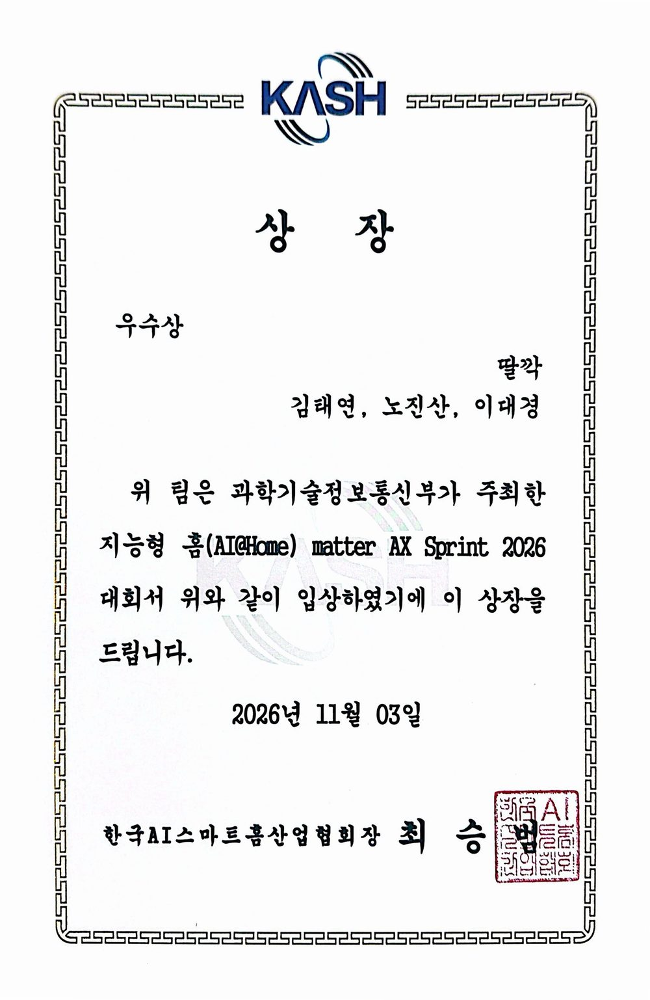

Matter AX Sprint 2026 우수상
Go/No-Go
지능형 홈 허브 소형 AI의 판단 보조 중계 기기
우수상한국AI스마트홈산업협회장상
20팀1차 서류 심사 통과, 본선 발표와 시연
3단 판정Go, No-Go, Hold
현장과 문제
- 지능형 홈
- 상황 판단부터 기기 동작까지 시스템 직접 수행
- 허브 AI
- 저전력 소형 언어모델, 낮은 추론 능력과 과부하
- 빈 부분
- 소형 모델에 보낼 내용의 선별과 정리
- 출발점
- 허브 판단 성능의 수치 확인 후 보강
잰 것
- 대상
- 허브 소형 언어모델의 판단 결과
- 비교
- 단순 요약 전달 방식 대비
만든 것
- 결과물
- 허브 앞단 판단 보조 중계 기기
- 판정
- Go, No-Go, Hold 세 갈래
- 언어모델 호출
- 판단이 불분명한 상황에 한정
- 확실한 상황
- 정해진 설명 틀로 즉시 처리
- 표준
- Matter, 와이파이 연결
정보
- 대회
- 지능형 홈(AI@Home) Matter AX Sprint 2026
- 주최
- 과학기술정보통신부
- 시상
- 한국AI스마트홈산업협회
- 시상일
- 2026년 11월 3일
- 팀
- 딸깍 3인
- 역할
- 팀장
상장
